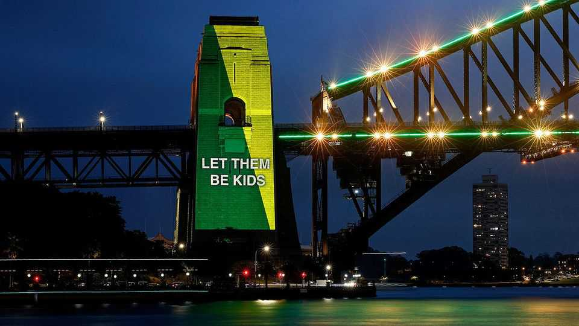

Social-media curbs for kids are not working in Asia
They are widely ignored, flouted and sidestepped

Sep 3rd 2026
IT SEEMED A parent’s dream. To manage the time her 14-year-old son spent online, Harini Naidu had tried various tactics: from restricting Wi-Fi access to turning the internet off at night. So she was excited when Australia became the first country in the world to ban social-media accounts for under-16s. But the rules, imposed in December, “literally did nothing”. Her son lost his YouTube account, but can still watch videos without logging in. Ms Naidu’s daughter Ishana was 15, but has kept her accounts on X, Instagram, Snapchat and TikTok. Ishana says: “It’s so underwhelming that people have forgotten there’s a ban.” They do not even have to hide behind virtual private networks.
The experiences of teens like Ishana matter to other countries, too. Since Australia brought in its curbs, dozens have done the same, or are considering it. On August 24th New Zealand announced a planned ban. Policymakers worry that social media cause various harms to the young. They also know that bans are popular with adults. Many cheered on August 26th when Meta agreed to change its products for under-18s in most American states, including a two-hours-per-day limit on their scrolling, after settling a lawsuit alleging its platforms harm youngsters.
Yet so far, Australia’s policy has proved largely ineffective. At first the government was able to tout some successes. Social-media platforms had removed, restricted or deactivated almost 5m accounts in the first month. And it may be too early to write off the effectiveness of Australia’s new rules. But studies have shown they have so far had minimal impact on usage. One in the British Medical Journal in June found that, three months after restrictions were introduced, 85% of under-16s said they still used banned platforms. Twelve- and 13-year-olds spent the same amount of time on social media as before the ban. Worries that children migrate to alternative platforms, with lower safety standards, were mostly unfounded—but largely because so many remain on existing ones.
Young Aussies are keen to stay online. Some spy a challenge, says Ishana, as under-16s “want to use social media more because it’s banned”. The young “know how to outsmart the system”, she explains, including by creating joint accounts with friends, which she thinks confuses age-checking systems. Yet she says several accounts with her real date of birth were not removed. Many under-16s have made new accounts using a fake age. Others have entered their parents’ or siblings’ details.
Some blame tech firms for not enforcing the rules. KJR, a software-testing company, recently opened 50 social-media accounts in Australia claiming the user to be 16. It said only one site did any verification and all 50 accounts remained active. The government is trying to beef up its rules, including by doubling fines on offending firms to A$99m ($71m). It also wants to give Australia’s eSafety Commissioner power to make social-media firms hand over internal-usage data.
Others blame the policy’s ineffectiveness so far partly on the technology meant to enforce it. Firms are using various tools, including AI, to analyse posts and scan faces. But facial-age estimation software is not very accurate in distinguishing between, say, a 15- and 16-year-old. Lucina, a 15-year-old from the state of Victoria, says her face was scanned on Snapchat and she was told she looked 18. “The policy hasn’t been tested because it’s been technically impossible to enforce,” says Tama Leaver of Curtin University in Perth.
Mr Leaver thinks other countries planning similar laws are concluding that the “only way to do this is to require people’s real IDs”—ie, an official digital or physical identity card—when they sign up to social media. Malaysia, one of just a few other countries where Australian-style restrictions are in force, has opted for this method. L.S. Leonard, the chief legal counsel of Malaysia’s Communications and Multimedia Commission, the regulator, says that its assessment indicated that this would be “much more accurate” than the age-assurance approach used in Australia.
Yet things are not going to plan in Malaysia either. Mr Leonard says social-media platforms claim to have removed lots of under-age accounts, according to their own guidelines. But nothing has changed for most users, says Tricia Yeoh of the University of Nottingham’s Malaysian branch. Mr Leonard says platforms have asked for time to “make their system adaptable” for age verification; he expects everything “to be resolved” by January, after which non-compliers may be fined. Ms Yeoh, however, suspects platforms are worried about the risks of storing personal IDs on systems that could be hacked, or subject to requests from governments.
Some oppose blunt social-media bans like Australia’s because they think they let platforms get away with not making their sites safe. Ways to incentivise firms to do so are being contemplated. Canada plans to ban platforms from allowing under-16s to have social-media accounts, but only until these apps meet a set of safety criteria. And there are hopes that Meta, after introducing limits for teens in most American states, will roll the same features out elsewhere, and that other social-media firms will follow suit.
Young Australians think they deserve more credit: Ms Naidu’s 14-year-old son says many teenagers already “know how to be safe online”. He stays off X, for example, because it is “very unfiltered”. He prefers Reddit, which is “less unhinged”. ■
For exclusive coverage of Asian politics, economics and security, sign up to Asia Bulletin, our weekly subscriber-only newsletter.